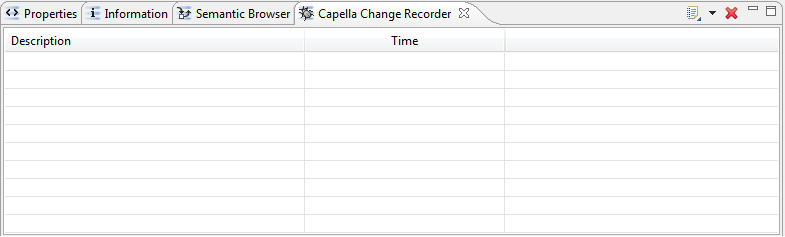
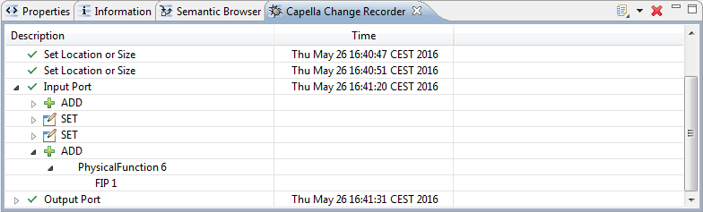

The Change Recorder View is essentially a debug tool. The recording configuration is defined in the Capella User Preferences
|
|
The Change Recorder View is essentially a debug tool. The recording configuration is defined in the Capella User Preferences |
By default, this view is not displayed in the Capella perspective. Its purpose is to display the log of the changes on a model, when the logger has been activated in the Preferences.
To display this view, click on Window / Show View / Capella Change Recorder.

To open a log file, click on the dedicated button on the right side of the view:

The recorded changes are displayed in the view.
